Diagrammfarben benutzerdefiniert anpassen
Customize-PlotColor
Wenn wir darüber sprechen, dass Diagrammfarben in Origin "benutzerdefiniert angepasst" werden, könnten wir auch über die Standardzuweisung von Diagrammfarben in einem existierenden Diagramm sprechen. Oder wir können über das Erstellen einer benutzerdefinierten Farbliste zur Verwendung in einem noch zu erstellenden Diagramm sprechen. Da es schwierig ist, über das eine ohne das andere zu reden, geht diese Seite von einer breiten Definition von "benutzerdefinierter Anpassung" aus.
Wenn Sie das Farbschema eines existierenden Diagramms aktiv ändern, lernen Sie schnell die sogenannte Farbauswahl kennen. Dies ist das erste Thema, das wir im Folgenden erläutern.
-
Zusätzlich zu den Themen auf dieser Seite haben Sie die Möglichkeit, Seiten mit Informationen über das benutzerdefinierte Anpassen von Diagrammfarben zu lesen.
Farbauswahl öffnen
Die Farbauswahl ist der Ausgangspunkt zum benutzerdefinierten Anpassen von Diagrammfarben im aktiven Diagrammfenster. Sie haben mehrere Möglichkeiten, um sie zu öffnen:
- Klicken Sie auf eine Zeichnung und wählen Sie eine farbrelevante Schaltfläche auf einer Minisymbolleiste.
- Klicken Sie doppelt auf die Zeichnung, um Details Zeichnung zu öffnen, und rufen Sie die Farbbearbeitung über die Farbschaltfläche für ein bestimmtes Element (z. B. Füllfarbe) auf.
- Klicken Sie auf eine Zeichnung und wählen Sie eine farbrelevante Schaltfläche auf der Symbolleiste Format (oben im Arbeitsbereich angedockt).
|
Beispieldiagramm |
Schaltfläche im Dialog Details Zeichnung oder auf Symbolleiste |
Ansicht Farbauswahl |
| Elemente einer EINZELNEN Farbe zeichnen |
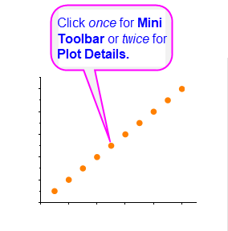
|
- oder ...
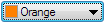
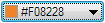
- außerdem...
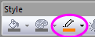
|

Verwandte Themen:
Bedienelemente der Registerkarte Symbol im Dialog Details Zeichnung
|
Zeichnungen, deren Farben variieren
NACH PUNKTEN |

|

- oder ...

- außerdem...
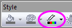

|

Verwandte Themen:
|
Zeichnungen, deren Farben variieren
NACH ZEICHNUNGEN |
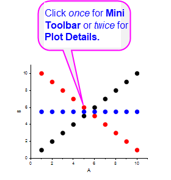
|
- oder ...


- außerdem...
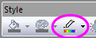
|

Verwandte Themen:
|
 |
- Sie können die RGB-Werte auf der Schaltfläche Farbe anzeigen, indem Sie anstatt die Systemvariable @RGBS auf 1 festlegen.
- Sie können die Funktion color() verwenden, um den entsprechenden zusammengesetzten RGB-Wert für einen festgelegten HTML-Farbcode wiederzugeben.
|
Benutzerdefinierte Farben definieren und verwenden
Origins Standardfarbliste
Origin enthält eine einfache, nicht anpassbare "System"farbliste, die hauptsächlich für die Rückwärtskompatibilität und die programmatische Zuweisung von Farben zuständig ist. Diese Farbliste befindet sich in der LabTalk-Referenztabelle "Farbliste".
Anwender der Bedienoberfläche müssen sich um diese Farbliste nicht kümmern, da die Farbauswahl und der Farbmanager beide Zugang zu Origins Standardfarblisten gewähren, von denen jede benutzerdefiniert angepasst und als eine Inkrementliste (.oth-Datei) in dem Ordner \Anwenderdateien\Themes\Graph gespeichert werden kann. Zusätzlich unterstützt Origin mehrere andere Methoden zum Hinzufügen von benutzerdefinierten Farblisten zur Software, einschließlich das Ziehen der Standarddateien der Farbpaletten per Drag&Drop.
|
Wenn Sie einen Artikel veröffentlichen, werden Sie möglicherweise gebeten, Farbbilder einzureichen, aus denen sowohl Farbbilder (z.B. online) als auch Schwarzweißbilder (z.B. Druck) erstellt werden können. Um zu prüfen, dass Ihre Farbliste eine ausreichend große Zeichnungsdifferenzierung aufweist, können Sie sich eine graustufige Vorschau anzeigen lassen. Wählen Sie Datei: Druckvorschau und klicken Sie auf die Schaltfläche Graustufen  . .
|
Eine benutzerdefinierte Farbe definieren
Diese Methode ist nützlich zum Erstellen von einer oder mehreren benutzerdefinierten Farben, die für die aktuelle Zeichnung verwendet werden. Informationen zum Auswählen einer Reihe von benutzerdefinierten Farben, die zur späteren Verwendung gespeichert werden finden Sie im nächsten Abschnitt.
- 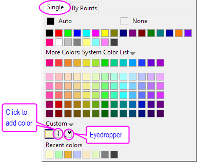
- Um eine einzelne benutzerdefinierte Farbe zu definieren, öffnen Sie die Farbauswahl und klicken Sie auf die Registerkarte Einzeln.
- Klicken Sie auf ein leeres Farbfeld
 unter Benutzerdefiniert, um den Dialog Farben zu öffnen, und gehen Sie dann zur Registerkarte Benutzerdefiniert.
unter Benutzerdefiniert, um den Dialog Farben zu öffnen, und gehen Sie dann zur Registerkarte Benutzerdefiniert.

- Definieren Sie Ihre Farbe mit einer der folgenden Vorgehensweisen:
- Verwenden Sie das Fadenkreuz und den Schieber, um eine Farbe auszuwählen.
- Klicken Sie auf die Pipette und dann auf die gewünschte Farbe in einem anderen Teil Ihres Origin-Arbeitsbereichs.
- Geben Sie die Werte für die RGB-, HSL- oder HTML-(Hex-)-Farbe in den Bearbeitungsfeldern ein.
- Optional geben Sie einen Namen für die benutzerdefinierte Farbe ein (falls unbenannt, zeigt die Bedienoberfläche einen Hex-Farbcode an).
- Wenn Sie fertig sind, klicken Sie auf Zu Benutzerdefiniert hinzufügen.
- Sie können auch auf die Pipette
 klicken und dann auf die gewünschte Farbe in einem anderen Bereich Ihres Arbeitsbereichs.
klicken und dann auf die gewünschte Farbe in einem anderen Bereich Ihres Arbeitsbereichs.
Die Farbe wird zu der Gruppe der Farbauswahl Benutzerdefiniert hinzugefügt. Fügen Sie nach Bedarf mehr Farben hinzu. Beachten Sie, dass Sie die Schaltfläche Zu Benutzerdefiniert hinzufügen verwenden können, um eine Abfolge von Farben ohne Schließen des Dialogs Farben hinzuzufügen.
Weiteres, das zu beachten wäre...
- Um eine vorhandene Benutzerdefinierte Farbe zu modifizieren, drücken Sie Strg und klicken Sie auf ein Farbfeld und verwenden Sie den Dialog Farben.
- Um eine zuvor angewendete benutzerdefinierte Farbe feiner abzustimmen, klicken Sie auf ein leeres Feld in der Gruppe Benutzerdefiniert und verwenden Sie die verfügbaren Bedienelemente (Fadenkreuz, Schieber, RGB etc.), um sie zu modifizieren.
- Sowohl benutzerdefinierte als auch zuletzt verwendete Farben bleiben automatisch über Sitzungen hinaus erhalten (d. h., sie bestehen noch, wenn Sie Origin das nächste Mal starten).
- Um eine Reihe von benutzerdefinierten Farben als eine Gruppe anzuwenden (z. B. zum Anwenden von Farben Nach Punkten in einer Zeichnung), müssen Sie sie als eine Inkrementliste speichern (siehe unten).
- Wenn Sie vor dem Speichern einer Liste von benutzerdefinierten Farben eine andere Farbliste laden, können Sie die vorherige Farbliste durch Klicken auf das Menü Benutzerdefiniert und Auswählen der Option Letzte benutzerdefinierte Farben wiederherstellen.
Eine Reihe von benutzerdefinierten Farben als Inkrementliste speichern
Die Begriffe "Farbliste" und "Inkrementliste" werden manchmal in der Origin-Dokumentation synonym genutzt. Um genauer zu sein: eine "Inkrementliste" ist einfach eine "Farbliste", die verwendet wurde, um einer Reihe von Datenpunkten oder Zeichnungen auf sequenzielle Weise Farben zuzuweisen.
Es gibt einige Methoden zum Erstellen einer Inkrementliste (Farbliste) -- je nachdem, ob Sie beabsichtigen, sie tatsächlich als Inkrementliste zu verwenden, oder zum Zuweisen von Diagrammfarben durch Abbildung, Indexierung etc.
Eine Farbliste erstellen, Schritt für Schritt
Diese Methode macht etwas mehr Aufwand als die zweite. Falls Sie Origin 2021 oder höher besitzen, lesen Sie bitte den Abschnitt gleich unter diesem.
- Bevor Sie eine Reihe von benutzerdefinierten Farben in einer Liste speichern, wollen Sie vielleicht erst einmal die Farbfelder leeren. Klicken Sie auf das Menü Benutzerdefiniert und klicken Sie dann auf Löschen.
- Definieren Sie Ihre Farbliste mit Hilfe der oben beschriebenen Vorgehensweise.
- Wenn Sie die Felder mit Ihren benutzerdefinierten Farben gefüllt haben, klicken Sie erneut auf das Menü Benutzerdefiniert und wählen Sie Speichern unter....
- Geben Sie einen Namen im Dialog Als Inkrementliste speichern ein und klicken Sie auf OK. Beachten Sie, dass Sie auf die Auswahlliste in diesem Dialog klicken und die aktuelle Auswahl in einer vorher erstellten Liste speichern können.
-
- 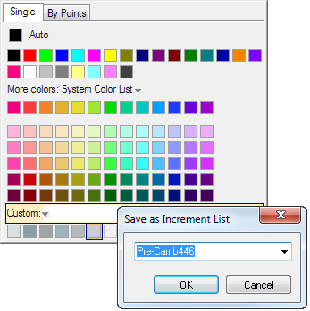
Eine Liste mit dem Dialog Farben erzeugen erstellen (Origin 2021 und höher)
Seit Origin 2021 können Sie den Dialog Farben erzeugen verwenden, um eine Farbliste zu erstellen. Einzelheiten finden Sie unter diesem Thema.
|
Seit Origin 2021b wurde der Inkrementeditor durch den Dialog Farben erzeugen ersetzt, um Farbeigenschaften zu bearbeiten. Farben erzeugen bietet mehr Funktionen, aber wenn Sie den Inkrementeditor vorziehen, können Sie ihn wiederherstellen, indem Sie die Systemvariable @DICE = 0 setzen. Informationen zum Ändern des Wert einer Systemvariablen finden Sie unter FAQ-708 Wie ändere ich permanent den Wert einer Systemvariablen?.
|
Farbliste aus Spalte erstellen
Wenn das Format der Spalten im Projekt auf Farbe gesetzt ist, wird die Option Farbliste aus Spalte erstellen im Menü Benutzerdefiniert der Farbauswahl gezeigt.
- Wählen Sie eine Farbformatspalte unter Farbliste aus Spalte erstellen aus. Die Farbe in der Spalte wird zur benutzerdefinierten Farbe und dem aufgerufenen Dialog Als Inkrementliste speichern hinzugefügt.
- Geben Sie der Farbliste einen Namen und klicken Sie auf OK.
Mit Farbinkrementlisten und -paletten arbeiten
Eine gespeicherte Inkrementliste verwenden
Sie können eine gespeicherte Liste über jede der drei Registerkarten der Farbauswahl - Einzeln, Nach Punkten oder Nach Zeichnungen laden (beachten Sie, dass nicht alle Zeichnungen alle drei Registerkarten anzeigen).
-
- Einzeln: Klicken Sie auf das Listenelement (nach unten weisender Pfeil) rechts von Mehr Farben.
-
Wählen Sie eine Farbliste und klicken Sie eine der verfügbaren Farben.
- Nach Punkten: Klicken Sie auf das Listenbedienelement neben Farbliste.
-
Ändern Sie beim Inkrementieren von Nach Punkten die Anfangsfarbe, indem Sie den Schieber Inkrement von verschieben. Wenn die Liste ausgeschöpft ist, bevor auf alle Punkte eine Farbe angewendet wurde, beginnt der Code wieder am Anfang der Liste.

- Nach Zeichnungen: Klicken Sie auf das Listenbedienelement neben Inkrementliste.
-
Wenn Sie auf der Registerkarte Nach Zeichnungen der Farbauswahl sind und sie eine neue Inkrementliste auswählen (eine andere als Q02 Basic), dann wird Ihnen eine Liste von Varianten angeboten. Diese Varianten betreffen "Farbton und Schattierung". Sie können auf jede Variante klicken, um die Farbvarianten in dieser auf Ihre Zeichnungen anzuwenden. Die gleiche Liste von Farbtönen und Schattierungen kann von der Registerkarte Einzeln aus geladen werden, obwohl diese Varianten nur als individuelle Blöcke und Farben einzeln angewendet werden können.

Der Dialog Farben erzeugen
Jede Farbliste (Standard oder benutzerdefiniert) kann über eine Registerkarte der Farbauswahl geladen und mit dem Dialog Farben erzeugen bearbeitet werden.
-
Inkrementliste laden
- Einzeln (nur benutzerdefinierte Liste): Klicken Sie auf das Menü Benutzerdefiniert und wählen Sie Inkrementeditor öffnen. Dies lädt die aktuelle Liste der benutzerdefinierten Farben in den Dialog Farben erzeugen.
- Nach Punkten oder Nach Zeichnungen: Drücken Sie die Strg-Taste und klicken Sie auf eine Farbliste (einschließlich Farbton-/Schattierungsvarianten oder Paletten) oder klicken Sie auf die Schaltfläche
 am Ende der Farbliste . Die Farbliste oder Palette wird im Dialog Farben erzeugen geöffnet.
am Ende der Farbliste . Die Farbliste oder Palette wird im Dialog Farben erzeugen geöffnet.

Inkrementliste ändern
Verwenden Sie den Dialog Farben erzeugen, um eine Inkrementliste zu modifizieren, und speichern Sie sie als eine neue Inkrementliste (siehe unten).
Liste neu ordnen
- Verwenden Sie die Schaltflächen Spiegeln, An erste Stelle verschieben, Nach oben verschieben, Nach unten verschieben und An letzte Stelle verschieben, um die Reihenfolge der Farbliste zu ändern. Alternativ können Sie die Elemente in der Liste auch an eine neue Stelle ziehen.
Farbe zu der Liste hinzufügen
- Klicken Sie auf die Schaltfläche Hinzufügen
 oder klicken Sie mit der rechten Maustaste auf die Liste und wählen Sie Hinzufügen. Eine schwarze (#0000) Zelle wird unten an die Liste angehängt.
oder klicken Sie mit der rechten Maustaste auf die Liste und wählen Sie Hinzufügen. Eine schwarze (#0000) Zelle wird unten an die Liste angehängt.
- Um die hinzugefügte Zelle zu bearbeiten, stellen Sie sicher, dass sie markiert ist. Wählen Sie dann mit Hilfe der Bearbeitungsfelder RGB/HSL/HTML eine benutzerdefinierte Farbe aus oder verwenden Sie die Pipette, um eine Farbe im Origin-Arbeitsbereich auszuprobieren.
- Verwenden Sie die neuen/aktuellen Blöcke, um die Farben zu vergleichen. Wenn Sie sich für eine Farbe entschieden haben, klicken Sie auf die Schaltfläche Ersetzen, um die schwarze Platzhalterzelle zu ersetzen.
Farbe aus der Liste löschen
- Markieren Sie eine Farbe und verwenden Sie die Schaltfläche Löschen
 oder klicken Sie mit der rechten Maustaste auf ein Listenmitglied und wählen Sie Löschen im Kontextmenü.
oder klicken Sie mit der rechten Maustaste auf ein Listenmitglied und wählen Sie Löschen im Kontextmenü.
Farben umbenennen
Einige Anwender ziehen einen natürlichen Sprachnamen anstelle der HTML.Farbcodes (Hex-Codes) vor.
- Um die Farben umzubenennen, klicken Sie mit der rechten Maustaste auf die Farbliste und wählen Sie Umbenennen (haben Sie Geduld, diese Funktion ist etwas langsam).
- Klicken Sie eine Zelle, um den Umbenennungsmodus zu aktivieren. Beachten Sie, dass dieser Modus aktiv bleibt, bis Sie das Kontrollkästchen neben Umbenennen deaktivieren.
-
Inkrementliste speichern
- Wenn Sie Farben erzeugen verwendet haben, um eine neue Inkrementliste zu erstellen, klicken Sie auf OK, um die Farbliste zu speichern, und schließen Sie den Dialog.
- Wenn Sie Farben erzeugen verwendet haben, um eine Inkrementliste zu modifizieren:
- Geben Sie der modifizierten Liste einen Namen. Um die ursprüngliche (nicht modifizierte) Liste zu bewahren, geben Sie einen neuen Namen ein.
- Klicken Sie auf Speichern, bevor Sie auf OK klicken. Wenn Sie nicht speichern, gehen die Modifikationen verloren.
Beachten Sie, dass Inkrementlisten als .oth-Dateien im Ordner \User Files\Themes\Graph gespeichert werden. Wenn sie gespeichert sind, werden diese Inkrementlisten über die gesamte Bedienoberfläche verfügbar und können auch über Designs verwalten verwendet werden.
Palette bearbeiten
Palettendateien zeigen im Allgemeinen mehr Farbvariationen an als Farblisten. Ihr eigentlicher Unterschied liegt jedoch in der Art und Weise, wie sie gespeichrt werden. Farblisten (Inkrementlisten) werden unter Anwenderdateien\Themes\Graph als .oth-Dateien (Designdateien) gespeichert. Palettendateien werden unter Anwenderdateien\Palettes als .pal-Dateien gespeichert.
Palette zum Bearbeiten laden
- Wählen Sie aus dem Hauptmenü Hilfsmittel: Farbmanager.
- Klicken Sie auf die Option Paletten, dann mit der rechten Maustaste auf eine bearbeitbare Palette und wählen Sie Farbe bearbeiten. (Hinweis: Systempaletten können nicht bearbeitet werden, aber Sie können sie duplizieren und das Duplikat bearbeiten.)
Alternativ hierzu:
- Klicken Sie oben im Farbmanager auf die Schaltfläche Neu.
- Klicken Sie im Dialog Farben erzeugen mit der rechten Maustaste auf die Liste im linken Bedienfeld und laden Sie eine Palette.
Palette bearbeiten
Beachten Sie, dass Sie keine von Origins Standardfarbpaletten bearbeiten können, aber Sie können die Palette laden und sie unter einem neuen Namen speichern.
-
- Die einfachste Bearbeitung von Paletten kann durchgeführt werden, indem eine bearbeitbare Palette geladen und dann im Dialog Farben erzeugen auf die Schaltfläche Interpolieren geklickt wird. Legen Sie einen Interpolationstyp und die Anz. der Farben (256 max.) fest und klicken Sie dann auf OK.
- Eine weitergehende Bearbeitung erreichen Sie über Rechtsklick auf die Farbliste im Dialog Farben erzeugen. Wählen Sie In Paletteneditor öffnen, um den Dialog palEdit aufzurufen.
|
Die Systemvariable @ECD kann verwendet werden, um zu steuern, welcher Paletteneditor aufgerufen wird, wenn in Schritt 2 oben In Paletteneditor öffnen gewählt wird.
|
Weitere Informationen zum Bearbeiten, Speichern und Importieren von .pal-Dateien finden Sie unter diesen Themen:
Spaltenwerte zum Anwenden von Farbe nach Punkten verwenden
Wenn Sie auf der Registerkarte Nach Punkten der Farbauswahl sind, haben Sie eine Anzahl von Optionen zum Anwenden von Farbe auf die Datenpunkte in einer Zeichnung. Mit der einfachsten Wahl Inkrementrieren können Sie eine Anfangsfarbe für den ersten Punkt festlegen. Weisen Sie dann die Farben aus einer Farbliste zu den nachfolgenden Punkten zu. Siehe die Erläuterung für "Nach Punkten" unter Eine gespeicherte Inkrementliste verwenden.
Weitere Optionen ermöglichen Ihnen, einen Datensatz zu verwenden, um Farbe auf die Zeichnung anzuwenden: (Eine Übersicht finden Sie unter Mit einem Datensatz die Zeichnungsfarbe zu steuern).
- Index. Verwendet einen Datensatz der ganzen Zahlen oder kategorialen Werte zum Anwenden von Farbe. Siehe Index.
- RGB Direkt. Verwendet einen zusammengesetzten RGB-Wert zum Anwenden von Farbe. Siehe RGB Direkt.
- Farbpalette. Verwendet einen Datensatz der realen Zahlen, um Wertebereiche auf eine Farbskala abzubilden. Siehe Farbpalette.
-
- 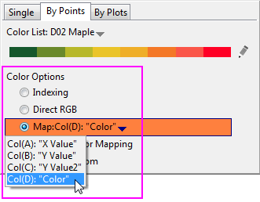
- Y-Wert: Farbabbildung Gibt es mehrere Y-Datenzeichnungen in einem Diagramm, verwenden Sie den jeweiligen Y-Datensatz als reale Zahlen, um die Wertebereiche auf eine Farbskala abzubilden. Siehe Y-Wert: Farbabbildung.
- Y-Wert: Plus-Minus-Summe Diese Option ist nur für Brückendiagramme (auch als Wasserfalldiagramme nach McKinsey bezeichnet) verfügbar. Diese Option füllt Säulen/Balken mit verschiedenen Farben, je nachdem ob der Datenpunkt des entsprechenden Y-Werts positiv, negativ oder die Summe ist. Die Summe kann in der Option Datenindizes für Summe/Teilsumme auf der Registerkarte Brückendiagramm festgelegt werden. Sie können die Füllfarbsequenz in der Farbliste unten sehen. Beachten Sie, dass nur die ersten 3 Farben für die Option Y-Wert: Plus-Minus-Summe verwendet werden: Die 1. Farbe in der Liste wird einem positiven Y, die 2. Farbe einem negativen Y und die 3. der Summe zugewiesen. Siehe Y-Wert: Plus-Minus-Summe.
|
Sie können die Abfolge in einer Farbliste modifizieren, indem Sie die Strg-Taste drücken und direkt auf die Liste klicken; oder Sie klicken auf das Stiftsymbol rechts von der Liste. Der Dialog Farben erzeugen wird geöffnet.
|
Dichtefarbabbildung
Eine der (Farb-) Optionen für Nach Punkten ist Dichtefarbabbildung. Anstatt einer Spalte mit Werten zum Zuweisen von Farbe weist diese Einstellung Farbe basierend auf der Dichte von Punkten in einem Punktdiagramm zu. Dies ist speziell für die Verwendung mit der Vorlage für Dichtepunkte gedacht zum Erstellen von Punktdiagrammen aus großen Datensätzen. Sie werden diese Option nicht nützlich finden, es sei denn, Sie haben ein Punktdiagramm mit einer signifikanten Anzahl von überlagerten Punkten.
| Hinweis: Jedes Mal, wenn Sie Farbabbildung auf eine Datenzeichnung anwenden, wird eine Registerkarte Farbpalette zum Dialog Details Zeichnung hinzugefügt. Auf der Registerkarte Farbpalette -- nicht auf der Registerkarte Symbol -- steuern Sie, wie die Farbe auf die Zeichnung angewendet wird. |
Werte in der Spaltenbeschriftungszeile zum Steuern der Zeichnungsfarbe verwenden
Abgesehen von der Verwendung von Spaltenindizes zum Anwenden einer Farbliste auf gruppierte Zeichnungen, können Sie für gruppierte 2D-Diagramme die tatsächlichen Werte eines Spaltenidentifizierer verwenden (eine Spaltenbeschriftungszeile), um die Farben der gruppierten Zeichnungen zu variieren.
Um Spaltenbeschriftungswerte für farbkodierte Gruppendiagrammme zu verwenden,
- zeichnen Sie all diese Y-Spalten als 2D-Diagramm.
- Klicken Sie auf eine Zeichnung, gehen Sie auf der Minisymbolleiste zur Registerkarte Gruppe und klicken Sie auf die Schaltfläche Füllfarbe, Rahmenfarbe oder Randfarbe, um die Farbauswahl zu erweitern. (Sie können auf doppelt auf die Zeichnung klicken, um den Dialog Details Zeichnung zu öffnen. Gehen Sie zur entsprechenden Registerkarte, um auf die Farbschaltfläche zu klicken.)
- Klicken Sie auf die Schaltfläche Spaltenbeschriftungszeile, um eine Spaltenbeschriftungszeile auszuwählen. Wählen Sie dann im erweiterten Bedienfeld eine Methode zum Abbilden der Farben auf die Werte der Spaltenbeschriftungszeile.

Hinweis: In der Liste der Spaltenbeschriftungszeilen bedeutet Zeichnungsindex die Indexnummer der Zeichnungen. Der Z-Wert ist nur für Wasserfalldiagramme verfügbar. Er wird verwendet, um die Linienfarben auf die Spaltenbeschriftungszeile, die unter der Option Quelle des Z-Werts festgelegt wurde, abzubilden.
Wählen Sie eine Abbildungsmethode für die Farben mit den Werten, die in der festgelegten Spaltenbeschriftungszeile gespeichert wurden:
- Index: Verwenden Sie die Werte in der ausgewählten Spaltenbeschriftungszeile, um die Farben der gruppierten Zeichnungen in einer spezifischen Farbliste zu indizieren.
- RGB Direkt: Betrachten Sie die ausgewählte Spaltenbeschriftungszeile wie eine Gruppe von RGB-Werten, die Farben auf das Gruppendiagramm anwendet.
- Farbpalette: Sie können eine Beziehung zwischen ausgewählten Z-Werten und einer zugehörigen Farbskala erstellen. Die Farbe wird dann auf die gruppierten Zeichnungen gemäß der Werte ihrer Spaltenbeschriftungszeile angewendet.
Um Einzelheiten zu diesen drei Methoden zu erfahren, lesen Sie bitte die Seite "Datensatz zum Steuern der Diagrammfarbe verwenden".
Was bedeutet "Auto" für Farbe?
Einige Farbschaltflächen zeigen standardmäßig Auto an.
-
-
-
- 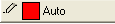
Wenn Auto auf den Schaltflächen angezeigt wird, wird die Farbe auf diese Weise angewendet:
| Wenn Farbe = Auto, folgt dieses Element... |
...dieser Einstellung: |
|
(Füll-) Musterfarbe
|
(Rahmen) Farbe
|
|
(Ankerlinien)Farbe
|
Symbolfarbe
|
|
Symbolfarbe
|
(Linien) Farbe Enthält das Diagramm keine Registerkarte Linie, wird Schwarz angezeigt.
|
|
(Symbol) Randfarbe
|
(Linien) Farbe Enthält das Diagramm keine Registerkarte Linie, wird Schwarz angezeigt.
|
|
(Symbol) Füllfarbe
|
Die Standardauswahl der Liste Symbolfüllfarbe auf der Registerkarte Diagramm des Dialogs Optionen
|
|
(Fehlerbalken) Farbe
|
Rahmenfarbe Falls kein Symbol (Punkt, Säulen etc.) existiert, wird der (Linien-) Farbe gefolgt.
|
Einige von Origins Schaltflächen und Auswahllisten für Farben enthalten auch die Option Keine. Wenn Sie Keine auswählen, wird das Diagrammelement transparent angezeigt.